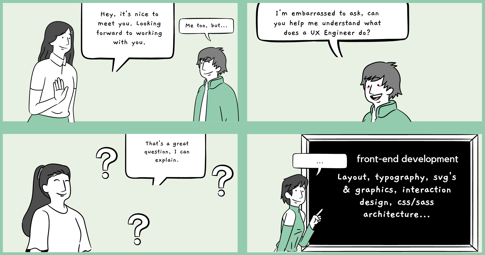

Defining UX Engineer
My work as a UX Engineer aligns best with Brad Frost's definition.
Products must work inclusively to a variety of users' abilities and contexts. I've focused on ensuring our products look and behave the way designers intend. Working in enterprises has given me the insights to scale my work across many platforms and productsproducts while providing support for many browsers and devices.
A few of my responsibilities include the following:
- UX & Accessibility focused
- WCAG 2.1 AA compliance
- Manual keyboard and screen reader testing
- CSS/SCSS Architecture
- Layout
- Typography
- SVG's & graphics
- Application of interaction design & animation
- Theming
- Responsive design
- HTML DOM structure
- Cross browser compatibility